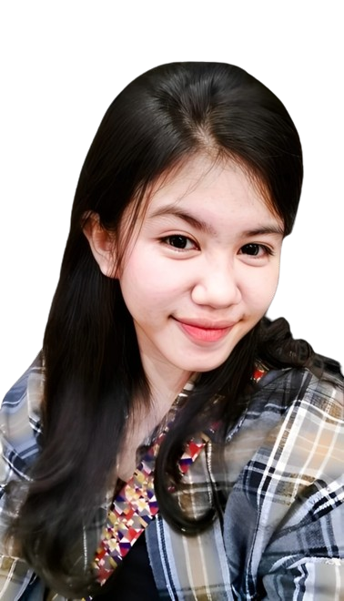

halo 👋 Saya
Syarifah Revalina
Akuntan | Mahasiswa
“Love is a canvas furnished by nature and embroidered by
imagination.”
~Voltaire
“Love is a canvas furnished by nature and embroidered by
imagination.”
~Voltaire
Syarifah Revalina lahir di Takalar tahun 2006 bulan juli tanggal 1. Walaupun lahir di Takalar, dia tinggal di Makassar dan sekolah di Makassar juga. Dia bersekolah di SMK Negeri 7 Makassar jurusan Akuntansi. Di sekolah dia anak yang pintar, rajin dan juga mudah bergaul.
Selain pintar, Revalina memiliki sifat kekanak-kanakan, yang bikin dia kelihatan lucu. Dia juga orang yang moodyan moodnya gampang berubah-ubah, kadang yang tadinya happy tiba-tiba sedih. Selain moodyan, dia tuh orang yang perasa, hal tersebut membuatnya mudah sedih pada hal-hal kecil dan dirinya mudah berempati pada orang di sekitarnya. Walaupun begitu dia itu orangnya attactive dan extrovert tipikal orang yang ga bisa diam, selalu pengen jalan h3h3h3.
walaupun begitu banyak juga orang yang tidak suka kepadanya, dia sering dianggap caper dan lain sebagainya. Banyak yang cuma pura-pura baik di depannya tetapi di belakangnya sering menjelek-jelekkan dia. Hal itu sering membuatnya sakit hati karena dirinya baik kepada orang-orang disekitarnya namun dibalas dengan perlakuan tidak baik.

"Cinta sejati itu memandang kelemahan, lalu dijadikan kelebihan untuk saling mencintai"
"Cinta sejati serupa abadi. Selalu terbakar, tak pernah sakit, tak pernah tua, tak pernah mati. Tak pernah pula berpaling "
"Beberapa orang akan pergi dari hidupmu, tapi itu bukan akhir dari ceritamu. Itu cuma akhir dari bagian mereka di ceritamu"
"Hubungan asmara itu seperti kaca. Terkadang lebih baik meninggalkannya dalam keadaan pecah. Daripada menyakiti dirimu dengan cara menyatukan mereka kembali"
"Hidup yang baik adalah hidup yang diinspirasi oleh cinta dan dipandu oleh ilmu pengetahuan."
Website ini diperuntukkan untuk seseorang berinisial SR. Saya ingin
mengucapkan Terima kasih sudah meluangkan waktunya untuk si impostor
ini :v jadi makasih yaaa.
Dia orang yang pintar walalupun tidak percaya diri. Di sekolah
seluruh tugas-tugasnya banyak yang tuntas seperti mata pelajaran
Akuntansi Pemerintah, AKuntansi Manufaktur (Lab) dan Komputer
Akuntansi (Myob). Bahkan saat latihan untuk persiapan ujian excel,
dirinya menjadi yang pertama selesai dalam latihan itu.
Setiap rintangan itu bagiakan peluang untuk tumbuh dan belajar.
Perlu diingat bahwa di balik setiap masalah, pasti ada hikmah dan
pelajaran berharga yang bisa didapatkan. Charlie Chaplin pernah
berkata "Tidak ada yang abadi di dunia ini begitupun dengan
masalah". Orang yang sering menghina itu cuma iri sama dirimu,
makanya mereka seperti itu, kalau mereka berbuat jahat kepadamu,
ingat yaa jangan balas dengan kejahatan juga, "Balas dendam terbaik
adalah menjadikan dirimu lebih baik" ~Ali bin Abi Thalib.
Manusia-manusia kuat itu Revaa :b
#Janganberubah